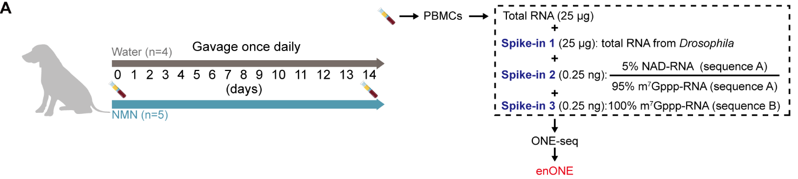

enONE_tutorial
enONE_tutorial.RmdIntroduction
The hub metabolite, nicotinamide adenine dinucleotide (NAD), can be
used as an initiating nucleotide in RNA transcription to result in
NAD-capped RNAs (NAD-RNAs). Epitranscriptome-wide profiling of NAD-RNAs
involves chemo-enzymatic labeling and affinity-based enrichment; yet
currently available computational analysis cannot adequately remove
variations inherently linked with capture procedures. Here, we propose a
spike-in-based normalization and data-driven evaluation framework,
enONE, for the omic-level analysis of NAD-capped RNAs.
enONE package is implemented in R and publicly available
at https://github.com/thereallda/enONE.
Setup
For this tutorial, we will demonstrate the enONE
workflow by using a NAD-RNA-seq data of peripheral blood mononuclear
cells (PBMCs) from beagle dogs with 14 days of NMN supplementation or
water gavage. Notably, we included three types of spike-in RNAs: 1)
total RNAs from Drosophila melanogaster, an invertebrate model
organism with well-annotated genome sequence, for estimating the
unwanted variation; 2) synthetic RNAs, consisting of 5% NAD- relative to
m7G-capped forms, were used to determine the capture sensitivity; 3)
synthetic RNAs, with 100% m7G-capped forms, were used to determine the
capture specificity (Figure 2A).
There are 36 samples that were sequenced on the Illumina Novaseq 6000. The raw data can be found at GSE221133.

Left panel: study design for NMN gavage experiment in beagle dogs; Right panel: schematic workflow for total RNAs from dog PBMCs and three sets of spike-ins.
We start by reading in the data, including count matrix and metadata.
It is recommended to provide the assay group of samples with the
assay column in metadata.
library(enONE)
library(tidyverse)
library(patchwork)
# read in metadata and counts matrix
counts.mat <- read.csv('../data/Counts.csv', row.names = 1)
meta <- read.csv('../data/metadata.csv', comment.char = '#')
meta
#> id condition replicate assay
#> 1 C1 D0_ctrl.Input 1 Input
#> 2 C2 D0_ctrl.Input 2 Input
#> 3 C3 D0_ctrl.Input 3 Input
#> 4 C5 D0_ctrl.Input 4 Input
#> 5 C6 D14_ctrl.Input 1 Input
#> 6 C7 D14_ctrl.Input 2 Input
#> 7 C8 D14_ctrl.Input 3 Input
#> 8 C10 D14_ctrl.Input 4 Input
#> 9 C11 D0_ctrl.Enrich 1 Enrich
#> 10 C12 D0_ctrl.Enrich 2 Enrich
#> 11 C13 D0_ctrl.Enrich 3 Enrich
#> 12 C15 D0_ctrl.Enrich 4 Enrich
#> 13 C16 D14_ctrl.Enrich 1 Enrich
#> 14 C17 D14_ctrl.Enrich 2 Enrich
#> 15 C18 D14_ctrl.Enrich 3 Enrich
#> 16 C20 D14_ctrl.Enrich 4 Enrich
#> 17 N1 D0_nmn.Input 1 Input
#> 18 N2 D0_nmn.Input 2 Input
#> 19 N3 D0_nmn.Input 3 Input
#> 20 N4 D0_nmn.Input 4 Input
#> 21 N5 D0_nmn.Input 5 Input
#> 22 N6 D14_nmn.Input 1 Input
#> 23 N7 D14_nmn.Input 2 Input
#> 24 N8 D14_nmn.Input 3 Input
#> 25 N9 D14_nmn.Input 4 Input
#> 26 N10 D14_nmn.Input 5 Input
#> 27 N11 D0_nmn.Enrich 1 Enrich
#> 28 N12 D0_nmn.Enrich 2 Enrich
#> 29 N13 D0_nmn.Enrich 3 Enrich
#> 30 N14 D0_nmn.Enrich 4 Enrich
#> 31 N15 D0_nmn.Enrich 5 Enrich
#> 32 N16 D14_nmn.Enrich 1 Enrich
#> 33 N17 D14_nmn.Enrich 2 Enrich
#> 34 N18 D14_nmn.Enrich 3 Enrich
#> 35 N19 D14_nmn.Enrich 4 Enrich
#> 36 N20 D14_nmn.Enrich 5 EnrichNext, we use the count matrix to create a Enone object.
The object serves as a container that contains both data (raw and
normalized counts data) and analysis (e.g., normalization performance
evaluation score and enrichment results) for a NAD-RNA-seq dataset.
When constructing Enone object, prefix of spike-in genes
(spike.in.prefix = "^FB"), the id of synthetic spike-in
(synthetic.id = c("Syn1", "Syn2")), and the id of input
(input.id = "Input") and enrichment
(enrich.id = "Enrich") samples can be provided.
Syn1: 5% NAD-RNA;
Syn2: 100% m7G-RNA
# prefix of Drosophila spike-in genes
spikeInPrefix <- "^FB"
# create Enone
Enone <- createEnone(data = counts.mat,
bio.group = meta$condition,
enrich.group = meta$assay,
batch.group = NULL,
spike.in.prefix = spikeInPrefix,
synthetic.id = c("Syn1", "Syn2"),
input.id = "Input",
enrich.id = "Enrich"
)
Enone
#> class: Enone
#> dim: 48735 36
#> metadata(0):
#> assays(1): ''
#> rownames(48735): ENSCAFG00845015183 ENSCAFG00845015195 ... Syn1 Syn2
#> rowData names(3): GeneID SpikeIn Synthetic
#> colnames(36): C1 C2 ... N19 N20
#> colData names(5): id condition enrich replicate batchStandard workflow
The enONE workflow consists of four steps: 1) Quality
control; 2) Gene set selection; 3) Normalization procedures; 4)
Normalization performance assessment.
Quality Control
enONE initiate with quality control step to filter
lowly-expressed genes. This step is performed with
filterByExpr from edgeR package.
keep <- edgeR::filterByExpr(counts.mat, group = meta$condition)
Enone <- Enone[keep, ]
Enone
#> class: Enone
#> dim: 28795 36
#> metadata(0):
#> assays(1): ''
#> rownames(28795): ENSCAFG00845015217 ENSCAFG00845015316 ... Syn1 Syn2
#> rowData names(3): GeneID SpikeIn Synthetic
#> colnames(36): C1 C2 ... N19 N20
#> colData names(5): id condition enrich replicate batchAdditionally, outliers can be assessed by Rosner’s outlier test on principal component 1. Since no sample is flagged as outlier, we will use all samples in following analysis.
## ronser's test for outlier assessment
vt <- DESeq2::vst(as.matrix(SummarizedExperiment::assay(Enone)), nsub = 20000)
pc <- prcomp(t(vt))
## all samples pass the test
EnvStats::rosnerTest(pc$x[,1])$all.stats
#> i Mean.i SD.i Value Obs.Num R.i+1 lambda.i+1 Outlier
#> 1 0 4.350301e-15 118.1289 144.0791 32 1.219678 2.990585 FALSE
#> 2 1 -4.116547e+00 117.2043 138.1465 28 1.213804 2.978183 FALSE
#> 3 2 -8.300754e+00 116.2832 133.1332 27 1.216288 2.965315 FALSERunning enONE
The main enONE function can be used to perform gene
selection, normalization, and evaluation. This function return selected
gene set in rowData, normalized count matrix in
counts slot (when return.norm=TRUE),
normalization factors (enone_factor slot), evaluation
metrics and scores in enone_metrics and
enone_scores slots, respectively. Detailed of these steps
are described bellow.
Enone <- enONE(Enone,
scaling.method = c("TC", "UQ", "TMM", "DESeq", "PossionSeq"),
ruv.norm = TRUE, ruv.k = 3,
eval.pam.k = 2:6, eval.pc.n = 3,
return.norm = TRUE
)
#> Gene set selection for normalization and assessment...
#> - The number of negative control genes for normalization: 1000
#> - The number of positive evaluation genes: 500
#> - The number of negative evaluation genes: 500
#> Apply normalization...
#> Perform assessment...Gene set Selection
For gene set selection, enONE defined three sets of control genes, including:
Negative Control (
NegControl): By default,enONEdefine the 1,000 least significantly enriched genes in Drosophila spike-ins (or other RNA spike-in from exogenous organism), ranked by edgeR FDR values, as the negative controls for adjustment of the unwanted variations.Negative Evaluation (
NegEvaluation): By default,enONEdefine the 500 least significantly varied genes in samples of interest, ranked by edgeR FDR values, as negative evaluation genes for evaluation of the unwanted variations.Positive Evaluation (
PosEvaluation): By default,enONEdefine the 500 most significantly enriched genes in samples of interest, ranked by edgeR FDR values, as positive evaluation genes for evaluation of the wanted variations.
Gene selection can either be automatically defined in
enONE function with auto=TRUE parameter, or be
provided in neg.control, pos.eval, neg.eval parameters,
respectively.
Selected gene sets can be assessed by getGeneSet with
the name of gene set (i.e., "NegControl",
"NegEvaluation", "PosEvaluation").
getGeneSet(Enone, "NegControl")[1:5]
#> [1] "FBgn0267987" "FBgn0266906" "FBgn0031256" "FBgn0266032" "FBgn0031285"Normalization
enONE implements global scaling and regression-based
methods for the generation of normalization procedures.
For the global scaling normalization procedures, five different
scaling procedures are implemented, including 1) Total Count (TC); 2)
Upper-Quartile (UQ); 3) Trimmed Mean of M Values (TMM); 4) DESeq; 5)
PossionSeq. Users can perform with selected scaling procedures in
scaling.method parameter.
For the regression-based procedures, enONE use three
variants of RUV to estimate the factors of unwanted variation,
including: 1) RUVg; 2) RUVs; 3) RUVse. For instance, you can perform RUV
with selected the first two unwanted factors with
ruv.norm =TRUE, ruv.k=2.
RUVse is a modification of RUVs. It estimated the factors of unwanted variation based on negative control genes from the replicate samples in each assay group (i.e., enrichment and input), for which the enrichment effect was assumed to be constant.
All applied normalization methods can be assessed by
list
listNormalization(Enone)
#> [1] "TC" "UQ" "TMM"
#> [4] "DESeq" "PossionSeq" "Raw"
#> [7] "TC_RUVg_k1" "TC_RUVs_k1" "TC_RUVse_k1"
#> [10] "TC_RUVg_k2" "TC_RUVs_k2" "TC_RUVse_k2"
#> [13] "TC_RUVg_k3" "TC_RUVs_k3" "TC_RUVse_k3"
#> [16] "UQ_RUVg_k1" "UQ_RUVs_k1" "UQ_RUVse_k1"
#> [19] "UQ_RUVg_k2" "UQ_RUVs_k2" "UQ_RUVse_k2"
#> [22] "UQ_RUVg_k3" "UQ_RUVs_k3" "UQ_RUVse_k3"
#> [25] "TMM_RUVg_k1" "TMM_RUVs_k1" "TMM_RUVse_k1"
#> [28] "TMM_RUVg_k2" "TMM_RUVs_k2" "TMM_RUVse_k2"
#> [31] "TMM_RUVg_k3" "TMM_RUVs_k3" "TMM_RUVse_k3"
#> [34] "DESeq_RUVg_k1" "DESeq_RUVs_k1" "DESeq_RUVse_k1"
#> [37] "DESeq_RUVg_k2" "DESeq_RUVs_k2" "DESeq_RUVse_k2"
#> [40] "DESeq_RUVg_k3" "DESeq_RUVs_k3" "DESeq_RUVse_k3"
#> [43] "PossionSeq_RUVg_k1" "PossionSeq_RUVs_k1" "PossionSeq_RUVse_k1"
#> [46] "PossionSeq_RUVg_k2" "PossionSeq_RUVs_k2" "PossionSeq_RUVse_k2"
#> [49] "PossionSeq_RUVg_k3" "PossionSeq_RUVs_k3" "PossionSeq_RUVse_k3"
#> [52] "Raw_RUVg_k1" "Raw_RUVs_k1" "Raw_RUVse_k1"
#> [55] "Raw_RUVg_k2" "Raw_RUVs_k2" "Raw_RUVse_k2"
#> [58] "Raw_RUVg_k3" "Raw_RUVs_k3" "Raw_RUVse_k3"Normalized counts can be assessed by Counts
head(Counts(Enone, slot="sample", method="TMM_RUVse_k3"))[,1:5]
#> C1 C2 C3 C5 C6
#> ENSCAFG00845015217 0.1270775 0.1580804 0.5073167 0.1972178 0.1473110
#> ENSCAFG00845015316 0.6467976 1.1029219 0.7496786 0.9257258 0.6365079
#> ENSCAFG00845015457 213.0782649 191.3361797 145.7496546 223.9916657 182.9394510
#> ENSCAFG00845015550 22.7519362 26.4536677 24.4529529 20.3535993 24.0241785
#> ENSCAFG00845015637 4.1985951 4.7444409 4.4990044 4.1284498 5.3711438
#> ENSCAFG00845015701 4.7503025 5.2315408 5.1139479 6.6107143 6.7737966Evaluation
To evaluate the performance of normalization, enONE
leverages eight normalization performance metrics that related to
different aspects of the distribution of gene expression measures. The
eight metrics are listed as below:
BIO_SIM: Similarity of biological groups. The average silhouette width of clusters defined bybio.group, computed with the Euclidean distance metric over the first 3 expression PCs (default). Large values ofBIO_SIMis desirable.EN_SIM: Similarity of enrichment groups. The average silhouette width of clusters defined byen.group, computed with the Euclidean distance metric over the first 3 expression PCs (default). Large values ofEN_SIMis desirable.BAT_SIM: Similarity of batch groups. The average silhouette width of clusters defined bybatch.group, computed with the Euclidean distance metric over the first 3 expression PCs (default). Low values ofBAT_SIMis desirable.PAM_SIM: Similarity of PAM clustering groups. The maximum average silhouette width of clusters defined by PAM clustering (cluster byeval.pam.k), computed with the Euclidean distance metric over the first 3 expression PCs (default). Large values ofBAT_SIMis desirable.WV_COR: Preservation of biological variation. R^2 measure for regression of first 3 expression PCs on firsteval.pc.nPCs of the positive evaluation genes (PosEvaluation) sub-matrix of the raw count. Large values ofWV_CORis desirable.UV_COR: Removal of unwanted variation. R^2 measure for regression of first 3 expression PCs on firsteval.pc.nPCs of the negative evaluation genes (NegEvaluation) sub-matrix of the raw count. Low values ofUV_CORis desirable.RLE_MED: The mean squared-median Relative Log Expression (RLE). Low values ofRLE_MEDis desirable.RLE_IQR: The variance of inter-quartile range (IQR) of RLE. Low values ofRLE_IQRis desirable.
Evaluation metrics can be assessed by getMetrics
getMetrics(Enone)[1:5,]
#> BIO_SIM EN_SIM BATCH_SIM PAM_SIM RLE_MED
#> TMM_RUVse_k3 0.004010675 0.3672915 0 0.7215727 0.0012331000
#> TMM_RUVs_k3 0.264969797 0.3526664 0 0.6917263 0.0013922471
#> TMM_RUVs_k2 0.273545725 0.3529028 0 0.6912465 0.0014106631
#> PossionSeq_RUVs_k2 0.162922204 0.3557378 0 0.6791057 0.0001844717
#> TMM_RUVs_k1 0.323222896 0.3572111 0 0.6832383 0.0017360384
#> RLE_IQR WV_COR UV_COR
#> TMM_RUVse_k3 0.02174805 0.8464516 0.3908795
#> TMM_RUVs_k3 0.02437620 0.6853092 0.1459999
#> TMM_RUVs_k2 0.02708899 0.7287250 0.1508830
#> PossionSeq_RUVs_k2 0.07336386 0.9182946 0.2784424
#> TMM_RUVs_k1 0.03318628 0.8619031 0.2170877Evaluation score is the average rank of each performance metrics,
which can be assessed by getScore
getScore(Enone)[1:5,]
#> BIO_SIM EN_SIM BATCH_SIM PAM_SIM RLE_MED RLE_IQR WV_COR
#> TMM_RUVse_k3 29 54 1 48 47 45 15
#> TMM_RUVs_k3 50 36 1 36 46 37 3
#> TMM_RUVs_k2 52 37 1 35 45 31 8
#> PossionSeq_RUVs_k2 43 43 1 17 59 7 43
#> TMM_RUVs_k1 55 47 1 25 39 22 19
#> UV_COR SCORE
#> TMM_RUVse_k3 29 38.14286
#> TMM_RUVs_k3 58 38.00000
#> TMM_RUVs_k2 57 37.85714
#> PossionSeq_RUVs_k2 50 37.42857
#> TMM_RUVs_k1 53 37.14286Select the suitable normalization for subsequent analysis
enONE provides biplot to exploit the full space of
normalization methods, you can turn on the interactive mode with
interactive=TRUE.
# get performance score
enScore <- getScore(Enone)
# perform PCA based on evaluation score, excluding BAT_SIM column (3) for no batch information provided, and SCORE column (9).
pca.eval <- prcomp(enScore[,-c(3, 9)], scale = TRUE)
# pca biplot
PCA_Biplot(pca.eval, score = enScore$SCORE, interactive = FALSE)
In this plot, each point corresponds to a normalization procedure and is colored by the performance score (mean of eight scone performance metric ranks). The blue arrows correspond to the PCA loadings for the performance metrics. The direction and length of a blue arrow can be interpreted as a measure of how much each metric contributed to the first two PCs
Here, we use the top-ranked procedure TMM_RUVse_k3 for downstream analysis.
# select normalization
norm.method <- rownames(enScore[1,])
# get normalized counts
norm.data <- Counts(Enone, slot = 'sample', method = norm.method)
# get normalization factors
norm.factors <- getFactor(Enone, slot = 'sample', method = norm.method)
norm.method
#> [1] "TMM_RUVse_k3"To be noted, if normalized counts are not returned in
enONErun step, you have to mannually perform the normalization method, before get the corresponding normalized counts, e.g.,
# perform normalization
Enone <- UseNormalization(Enone, slot = 'sample', method = 'TMM_RUVse_k3')
# get normalized counts
norm.data <- Counts(Enone, slot = 'sample', method = norm.method)Effect of normalization
We perform PCA based on the count matrix from sample of interest before and after the normalization, for demonstrating the effect of normalization.
# create sample name, e.g., D0_ctrl.Input.1
samples_name <- paste(Enone$condition, Enone$replicate, sep='.')
# PCA for raw count
p1 <- PCAplot(log1p(Counts(Enone, slot='sample', 'Raw')),
color = Enone$condition,
label = samples_name, vst.norm = FALSE) +
ggtitle('Before normalization')
# PCA for normalized count
p2 <- PCAplot(log1p(norm.data),
color = Enone$condition,
label = samples_name, vst.norm = FALSE) +
ggtitle('After normalization')
p1 + p2
Find enrichment
enONE package can help you find enrichment genes from
each biological groups via differential expression. It can identify
genes that significantly increased in enrichment samples compared to
input samples. FindEnrichment automates this processes for
all groups provided in bio.group.
By default, enriched genes (NAD-RNA in here) are defined as fold
change of normalized transcript counts ≥ 2
(logfc.cutoff = 1), FDR < 0.05
(p.cutoff = 0.05) in enrichment samples compared to those
in input samples.
Use getEnrichment to retrieve a list of enrichment
result tables.
# find all enriched genes
Enone <- FindEnrichment(Enone, slot='sample', method = norm.method,
logfc.cutoff = 1, p.cutoff = 0.05)
# get filtered enrichment results
res.sig.ls <- getEnrichment(Enone, slot='sample', filter=TRUE)
# count number of enrichment in each group
unlist(lapply(res.sig.ls, nrow))
#> D0_ctrl.Enrich_D0_ctrl.Input D14_ctrl.Enrich_D14_ctrl.Input
#> 2167 2102
#> D0_nmn.Enrich_D0_nmn.Input D14_nmn.Enrich_D14_nmn.Input
#> 2688 2402Each enrichment table is a data.frame with a list of
genes as rows, and associated information as columns (GeneID, logFC,
p-values, etc.). The following columns are present in the table:
-
GeneID: ID of genes. -
logFC: log2 fold-change between enrichment and input samples. Positive values indicate that the gene is more highly enriched in the enrichment group. -
logCPM: log2 CPM (counts per million) of the average expression of all samples. -
LR: Likelihood ratio of the likelihood ratio test. -
PValue: p-value from the likelihood ratio test. -
FDR: False discovery rate of the p-value, default “BH” method is applied.
head(res.sig.ls[[1]])
#> GeneID logFC logCPM LR PValue FDR
#> 1 ENSCAFG00845007784 2.959802 8.717648 509.4189 8.484765e-113 1.231648e-108
#> 2 ENSCAFG00845002083 3.157457 12.584706 375.8864 9.784997e-84 7.101951e-80
#> 3 ENSCAFG00845009430 2.510118 7.642940 340.5231 4.908601e-76 2.375108e-72
#> 4 ENSCAFG00845000887 2.287440 7.351301 299.2720 4.746529e-67 1.722515e-63
#> 5 ENSCAFG00845007809 3.177614 6.102379 295.1592 3.736355e-66 1.084738e-62
#> 6 ENSCAFG00845016135 2.327771 9.398165 293.5746 8.273551e-66 2.001648e-62To convert list of enrichment result tables into data frame in long
format, enONE package provide reduceRes
function for this task. Finally, you can use
BetweenStatPlot to compare the global extent of NAD-RNA
modification level between groups.
# simplify group id
names(res.sig.ls) <- c('D0.Water', 'D14.Water', 'D0.NMN', 'D14.NMN')
# logfc.col specify the name of logFC column
nad_df1 <- reduceRes(res.sig.ls, logfc.col = 'logFC')
# convert the Group column as factor
nad_df1$Group <- factor(nad_df1$Group, levels = unique(nad_df1$Group))
# draw plot
bxp1 <- BetweenStatPlot(nad_df1, x='Group', y='logFC', color='Group',
step.increase = 0.6, add.p = 'p',
comparisons = list(c('D0.Water', 'D14.Water'),
c('D0.NMN', 'D14.NMN')))
bxp1
Handling synthetic spike-in RNA
Since synthetic RNA, of which one with 5% NAD-caps and another with 100% m7G-caps, are included, we can determine the capture sensitivity and specificity.
synEnrichment calculate the enrichment levels of
spike-in with given normalization method. DotPlot can be
used to visualize the enrichment levels of synthetic spike-in.
# compute synthetic spike-in enrichment
syn_level <- synEnrichment(Enone, method=norm.method, log=TRUE)
# transform to long format
syn_df <- as.data.frame(syn_level) %>%
rownames_to_column("syn_id") %>%
pivot_longer(cols = -syn_id,
names_to = "id",
values_to = "logFC") %>%
left_join(meta[,c("id","condition")], by="id")
# remove suffix of condition for simplification
syn_df$condition <- gsub("\\..*", "", syn_df$condition)
# rename facet label
samples_label <- setNames(c('5% NAD-RNA', '100% m7G-RNA'),
nm=c('Syn1', 'Syn2'))
# draw dotplot
DotPlot(syn_df, x="condition", y="logFC", fill="condition") +
facet_wrap(~syn_id, labeller = as_labeller(samples_label)) +
theme(legend.position = 'none')
#> Bin width defaults to 1/30 of the range of the data. Pick better value with
#> `binwidth`.
Syn1, which contained 5% NAD-RNA, are significantly enriched, whereas no enrichment is found for Syn2 made up with 100% m7G-RNA.
# save Enone data
save(Enone, file="data/Enone.RData")Session Info
Session Info
sessionInfo()
#> R version 4.2.2 (2022-10-31)
#> Platform: x86_64-pc-linux-gnu (64-bit)
#> Running under: Ubuntu 22.04.1 LTS
#>
#> Matrix products: default
#> BLAS: /usr/lib/x86_64-linux-gnu/openblas-pthread/libblas.so.3
#> LAPACK: /usr/lib/x86_64-linux-gnu/openblas-pthread/libopenblasp-r0.3.20.so
#>
#> locale:
#> [1] LC_CTYPE=C.UTF-8 LC_NUMERIC=C LC_TIME=C.UTF-8
#> [4] LC_COLLATE=C.UTF-8 LC_MONETARY=C.UTF-8 LC_MESSAGES=C.UTF-8
#> [7] LC_PAPER=C.UTF-8 LC_NAME=C LC_ADDRESS=C
#> [10] LC_TELEPHONE=C LC_MEASUREMENT=C.UTF-8 LC_IDENTIFICATION=C
#>
#> attached base packages:
#> [1] stats graphics grDevices utils datasets methods base
#>
#> other attached packages:
#> [1] patchwork_1.1.2 forcats_0.5.2 stringr_1.5.0 dplyr_1.0.10
#> [5] purrr_1.0.0 readr_2.1.3 tidyr_1.2.1 tibble_3.1.8
#> [9] ggplot2_3.4.0 tidyverse_1.3.2 enONE_0.1.0
#>
#> loaded via a namespace (and not attached):
#> [1] readxl_1.4.1 backports_1.4.1
#> [3] systemfonts_1.0.4 lazyeval_0.2.2
#> [5] splines_4.2.2 BiocParallel_1.30.4
#> [7] GenomeInfoDb_1.32.4 digest_0.6.31
#> [9] htmltools_0.5.4 fansi_1.0.3
#> [11] magrittr_2.0.3 memoise_2.0.1
#> [13] googlesheets4_1.0.1 cluster_2.1.4
#> [15] tzdb_0.3.0 limma_3.52.4
#> [17] Biostrings_2.64.1 annotate_1.74.0
#> [19] modelr_0.1.10 matrixStats_0.63.0
#> [21] timechange_0.1.1 pkgdown_2.0.7
#> [23] colorspace_2.0-3 blob_1.2.3
#> [25] rvest_1.0.3 ggrepel_0.9.2
#> [27] textshaping_0.3.6 haven_2.5.1
#> [29] xfun_0.36 crayon_1.5.2
#> [31] RCurl_1.98-1.9 jsonlite_1.8.4
#> [33] EnvStats_2.7.0 genefilter_1.78.0
#> [35] survival_3.4-0 glue_1.6.2
#> [37] gtable_0.3.1 gargle_1.2.1
#> [39] zlibbioc_1.42.0 XVector_0.36.0
#> [41] DelayedArray_0.22.0 car_3.1-1
#> [43] kernlab_0.9-31 prabclus_2.3-2
#> [45] BiocGenerics_0.42.0 DEoptimR_1.0-11
#> [47] abind_1.4-5 scales_1.2.1
#> [49] DBI_1.1.3 edgeR_3.38.4
#> [51] rstatix_0.7.1 Rcpp_1.0.9
#> [53] viridisLite_0.4.1 xtable_1.8-4
#> [55] bit_4.0.5 mclust_6.0.0
#> [57] stats4_4.2.2 htmlwidgets_1.6.0
#> [59] httr_1.4.4 RColorBrewer_1.1-3
#> [61] fpc_2.2-9 modeltools_0.2-23
#> [63] ellipsis_0.3.2 farver_2.1.1
#> [65] pkgconfig_2.0.3 XML_3.99-0.13
#> [67] flexmix_2.3-18 nnet_7.3-18
#> [69] sass_0.4.4 dbplyr_2.2.1
#> [71] locfit_1.5-9.6 utf8_1.2.2
#> [73] labeling_0.4.2 tidyselect_1.2.0
#> [75] rlang_1.0.6 AnnotationDbi_1.58.0
#> [77] munsell_0.5.0 cellranger_1.1.0
#> [79] tools_4.2.2 cachem_1.0.6
#> [81] cli_3.5.0 generics_0.1.3
#> [83] RSQLite_2.2.20 broom_1.0.2
#> [85] evaluate_0.19 fastmap_1.1.0
#> [87] yaml_2.3.6 ragg_1.2.4
#> [89] knitr_1.41 bit64_4.0.5
#> [91] fs_1.5.2 robustbase_0.95-0
#> [93] KEGGREST_1.36.3 xml2_1.3.3
#> [95] compiler_4.2.2 plotly_4.10.1
#> [97] curl_4.3.3 png_0.1-8
#> [99] ggsignif_0.6.4 reprex_2.0.2
#> [101] geneplotter_1.74.0 bslib_0.4.2
#> [103] stringi_1.7.8 highr_0.10
#> [105] desc_1.4.2 lattice_0.20-45
#> [107] Matrix_1.5-1 vctrs_0.5.1
#> [109] pillar_1.8.1 lifecycle_1.0.3
#> [111] jquerylib_0.1.4 data.table_1.14.6
#> [113] bitops_1.0-7 GenomicRanges_1.48.0
#> [115] R6_2.5.1 IRanges_2.30.1
#> [117] codetools_0.2-18 MASS_7.3-58.1
#> [119] assertthat_0.2.1 SummarizedExperiment_1.26.1
#> [121] DESeq2_1.36.0 rprojroot_2.0.3
#> [123] withr_2.5.0 S4Vectors_0.34.0
#> [125] GenomeInfoDbData_1.2.8 diptest_0.76-0
#> [127] parallel_4.2.2 hms_1.1.2
#> [129] grid_4.2.2 class_7.3-20
#> [131] rmarkdown_2.19 MatrixGenerics_1.8.1
#> [133] carData_3.0-5 googledrive_2.0.0
#> [135] ggpubr_0.5.0 paintingr_0.1.0
#> [137] Biobase_2.56.0 lubridate_1.9.0